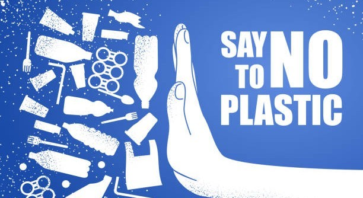
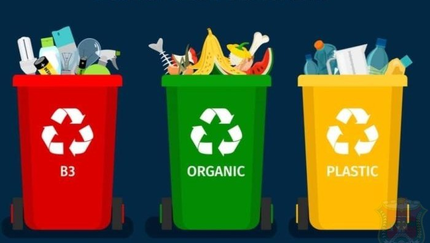
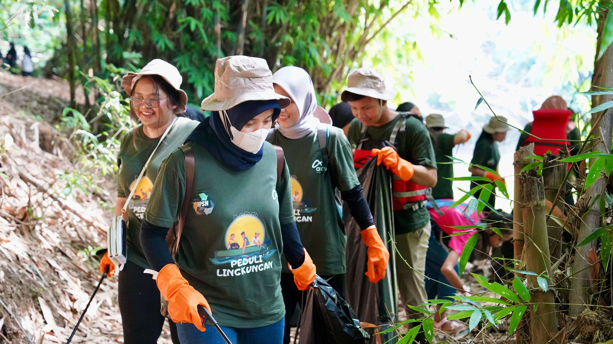
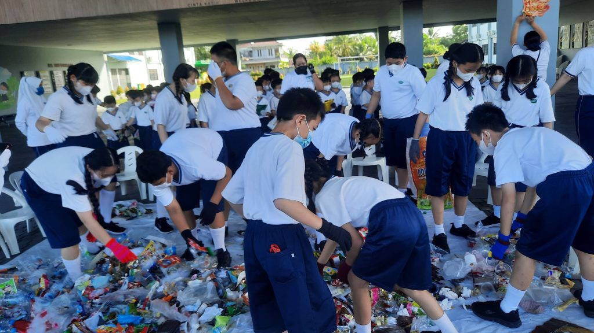
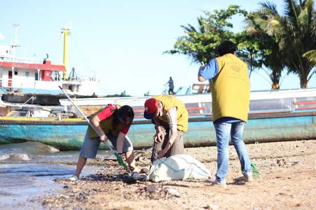

Setiap individu, keluarga, sekolah, komunitas, hingga organisasi mempunyai peran berbeda, tetapi semuanya saling melengkapi. Tindakan kecil yang konsisten bisa punya dampak besar jika dilakukan bersama.

Peran Individu
Mengurangi penggunaan plastik sekali pakai seperti sedotan plastik, kantong plastik, dan botol plastik.
Tidak membuang sampah ke sungai, laut, selokan, dan lain-lain.
Memilih produk laut yang berkelanjutan (tidak membeli ikan yang dilindungi).
Menghemat listrik dan bahan bakar karena emisi karbon dapat memperburuk kondisi laut.

Peran Keluarga
Menerapkan pemilahan sampah (organik, anorganik, dan daur ulang) di rumah.
Mengurangi konsumsi plastik dalam belanja.
Menerapkan kebiasaan “membawa tumbler sendiri” untuk mengurangi sampah.

Peran Komunitas
Melakukan kegiatan atau program tentang kebersihan lingkungan.
Mengedukasi warga tentang bahaya sampah mikroplastik.
Mendukung UMKM yang menjual produk ramah lingkungan.

Peran Sekolah
Membuat program tentang kebersihan lingkungan.
Membuat mading atau proyek tentang SDGs No.14.
Kolaborasi dengan komunitas lokal untuk kampanye lingkungan.

Peran Organisasi Masyarakat
Membuat program pembersihan pantai.
Mengadakan pelatihan nelayan tentang penangkapan ikan yang ramah lingkungan.
Mengembangkan program adopsi terumbu karang atau penanaman mangrove.